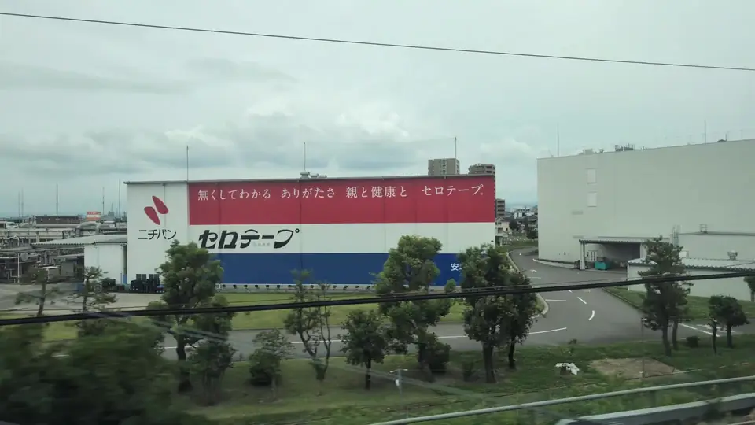

- Section
- Around Mikawa-Anjo
- Seat side
- Seat E · mountain side
- Timing
- About 85 minutes after leaving Tokyo on a Nozomi train
- Photos
- 3 photos
What is that factory actually making?
The wall belongs to the Anjo Factory of Nichiban Corporation. Founded in 1918 as Nichi-Ban Industrial Works, Nichiban is a long-established manufacturer of adhesive tapes and first-aid dressings, whose everyday brands — CELLOTAPE, the Care Leaves bandage line, the BATTLE WIN athletic tape range and more — are familiar in almost every Japanese household. Anjo is one of Nichiban's flagship factories and has been producing CELLOTAPE here since 1948. The building itself is an ordinary industrial facility, but by using its Shinkansen-facing wall as a giant advertisement, Nichiban has turned it into one of the Tokaido Shinkansen's most recognizable trackside signs.
More: Nichiban Corporate profileNichiban: The story of CELLOTAPE (Japanese only)Nichiban release: CELLOTAPE wall sign renewal (Japanese only)@letus10: CELLOTAPE Wall Sign window article (Japanese only)
If you are traveling from Tokyo toward Shin-Osaka, start watching the Seat E · mountain side window as you approach Mikawa-Anjo. If you are traveling toward Tokyo, the order is reversed.
About CELLOTAPE — and that one-line copy
'CELLOTAPE®' is Nichiban's registered trademark for clear cellophane-based adhesive tape. After World War II, when GHQ procurement created demand for this kind of tape, Nichiban became the leading domestic supplier and volume production spread from there. In Japan, clear stationery tape is very often called serotēpu, echoing Nichiban's brand — a fixed everyday word rather than the name of one product.
The wall has carried many different pieces of ad copy over the years. One of the best loved is: 'You only appreciate their value once they're gone: parents, health, and CELLOTAPE.' It flips a household staple into a small reminder of what you take for granted — an unusual tone for a trackside sign, and something riders often remember. The wall is repainted from time to time, so the exact message you see may not match the one your friend recalls.
Trackside advertising in Japan sometimes reaches beyond a company logo or a straight sales pitch to say something that lightly moves a passing rider. The 727 signs, the Shippei cheer-up signs and this CELLOTAPE wall are the classic trio. Regulars quietly enjoy watching for 'today's line.'
Location at a glance
Open mapSwitch between the spot and the Shinkansen viewpoint.
How to catch CELLOTAPE Wall Sign
1. Choose the window first
As you approach Mikawa-Anjo, start watching from Seat E · mountain side. Use Live Guide while riding, or the map on this page before you board.
The clearest view lasts only a few seconds. Decide the seat side and window direction before it arrives rather than reaching for your camera late.
2. Highlights
As Mikawa-Anjo approaches, watch the industrial area far off on the Seat E side. Look for a factory whose entire wall is dressed in bold red, blue and white stripes — that is Nichiban's Anjo Factory and its CELLOTAPE wall sign. In the opposite direction (upbound), the timing is just after passing Mikawa-Anjo. At night the sign itself is lit, so the red and blue bands float out of the dark industrial belt — arguably easier to spot than in daylight.
CELLOTAPE Wall Sign in photos


 Related
Toyohashi Tateiwa Rock
Related
Toyohashi Tateiwa Rock
 Related
Shippei Cheer-up Signs
Related
Shippei Cheer-up Signs
 Related
Gifu Castle
Related
Gifu Castle